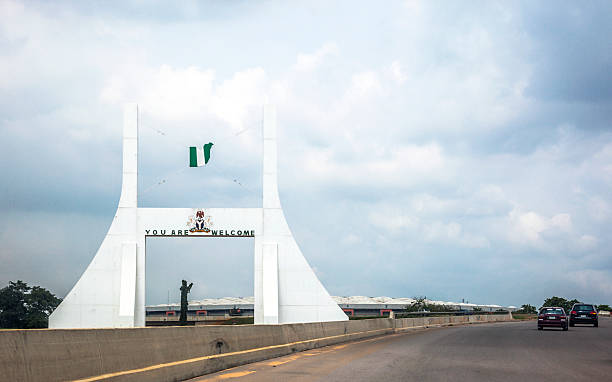

The North-Central is the one of the Six gropolitical zones of Nigeria representing the majority of the country's population. The North Central comprises of six states and the Country's Capital. A brief detail about a state in the North-Central. About FCTWelcome to Abuja

Benue
Kogi
Kwara
Nasarawa
Niger
Plateau
North East
The North-East is the one of the six Geopolitical Zones in Nigeria reprensenting both a geographic and political region of the country's northeast. it comprises Six states. Geopgraphically, the North East is the largest geopolitical zone in the nation, covering nearky one-third of Nigeria's total area. About a state in the North East. Yobe state govt.
The North West is the one of the six geopolitical zones in Nigeria representing both a geographic and political region of the country's northwest. It comprises seven states. Geopgraphically, the zones is almost entierly within the tropical West. Culturally the majority of zone falls within the indigenous cultural homeland of the Hausa people. Kano state govt.
Kano State Horse Festive
Kaduna
Kano
Katsina
Kebbi
Jigawa
Sokoto
Zamfara
South East
The South East is the one of the six geopolitical zones of Nigeria reprensenting both a geographic and political region of the country's inland southeast. It comprises five State. The zone is bounded by the River Niger on the west, the riverine Niger Delta on the south, the flat North Central to the north, and the Cross River on the east. About Ebonyi State.
The South-West is the one of the six geopoliticalzones of Nigeria representing both a geographic and political region of the country's southwest. It comprises six states. it makes up part of Yorubaland in Nigeria, with Kwara and Kogi completing it.About lagos state
molestias rem commodi adipisci?
Lagos State commercials
Ondo
lagos
Osun
Oyo
Ekiti
Ogun
South South
The South-South is one of the six geopolitical zones of Nigeria representing both a geographic and political region of the country's eastern coast. It comprises six states. About edo sate govt.
An Akwa Ibom Woman
Akwa Ibom
Bayelsa
Cross river
Delta
Edo
Rivers
Europe
Europe is the second-smallest continent, and it could be described as a large peninsula or as a subcontinent. Europe is the western portion of the Eurasian landmass and is located entirely in the Northern Hemisphere
Asia
Asia is the largest continent in the world by both land area and population.
America
The United States contains a highly diverse population. Unlike a country such as China that largely incorporated indigenous peoples, the United States has a diversity that to a great degree has come from an immense and sustained global immigration